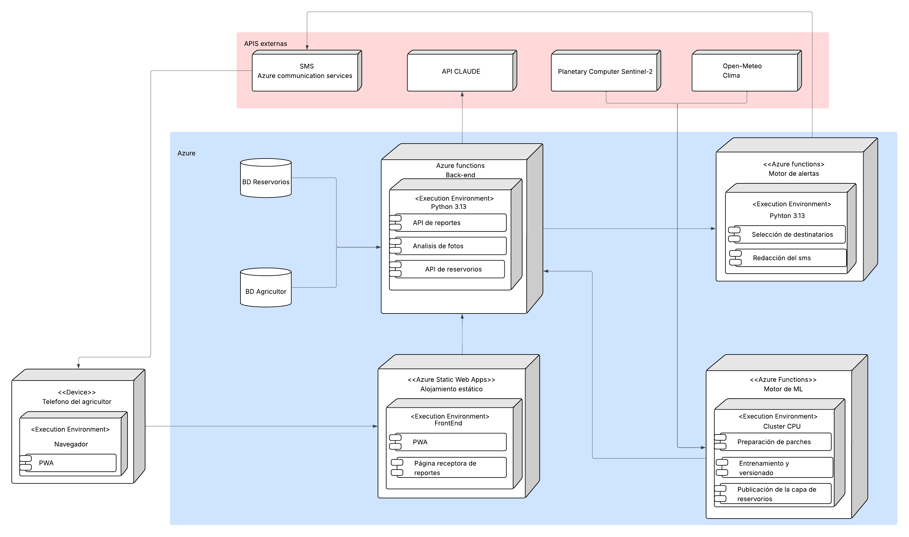

Encontrar al gusano cogollero antes de que llegue al maíz.
Un satélite descubre dónde sobrevive la plaga en la estación seca, un extensionista lo confirma con una foto y un SMS avisa a las familias cercanas, aunque no tengan datos.
▶ Ver la demoEl problemaEl gusano cogollero ataca el maíz de millones de pequeños productores en África cada temporada. Todo el control actual es reactivo.
El reservorio es la chispa que queda en las brasas. En la estación seca la plaga sobrevive en pocos parches verdes; con las lluvias sale de ahí hacia el maíz nuevo. Si se la encuentra en ese momento, se frena donde todavía es poca.
Detectar y verificar en la estación seca; actuar cuando llegan las lluvias; y aprender de cada temporada.
Satélite y clima encuentran parches verdes.
El modelo de ML estima la probabilidad de reservorio.
Mapa y ruta en la app del extensionista.
El extensionista visita el parche y saca fotos.
Claude busca señales del gusano en las fotos.
Reservorio confirmado o descartado.
El radar detecta maíz nuevo cerca.
SMS, voz o radio a las familias en riesgo.
Se compara lo predicho y se reentrena el modelo.
Cada punto verde es una predicción del modelo sobre imágenes satelitales, con su probabilidad: pasa el cursor. En el día 14 aparece todo Zambia.
Cada versión se entrena con más parches verificados y solo se publica si supera a la anterior en parches que nunca ve al entrenar. Es un modelo local, hecho para Zambia.
Todo en Azure: la app se sirve como sitio estático, el back-end y el motor de alertas son Azure Functions, y el modelo se reentrena en Azure ML.
Una foto llega al back-end, Claude da el veredicto, queda como etiqueta y el entrenamiento publica una capa nueva que recibe el mapa del teléfono.
Con un reporte verificado, el motor de alertas decide a qué familias avisar según la distancia al reservorio y arma un SMS con un enlace que funciona sin datos.
